7NEWS Young Achiever Awards South Australia 2025 (STEM Nomination)
Nominated for the prestigious STEM Award at the 7NEWS Young Achiever Awards South Australia, recognizing pioneering contributions in cyber security, AI, and community impact. Honoured at the Gala Dinner Presentation at the Hilton Adelaide alongside South Australian leaders and innovators.
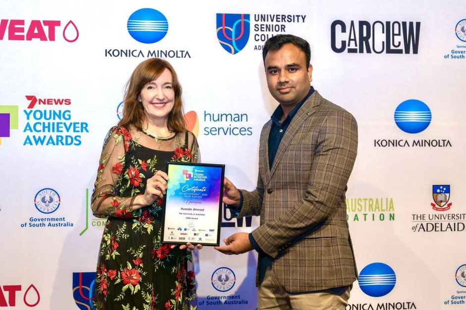
7NEWS Young Achiever Awards South Australia 2025
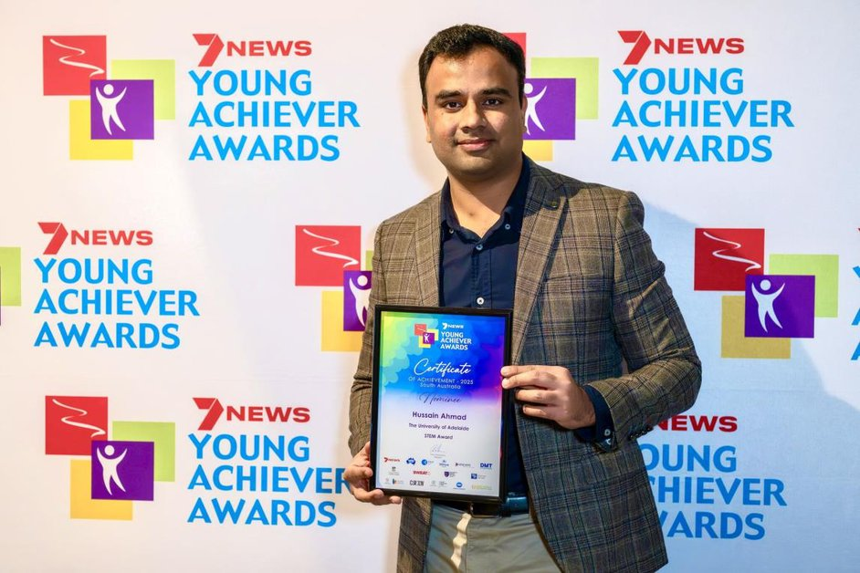
STEM Award Nomination Presentation
Media Feature: AI-driven Decision-Support Research for Australia’s Defence Sector
National defence and technology media coverage on the joint partnership between DEWC Services, Adelaide University, and Defence Trailblazer to develop sovereign, open-architecture AI-enabled decision-support capabilities for Australia’s Defence sector in high-tempo, contested environments.
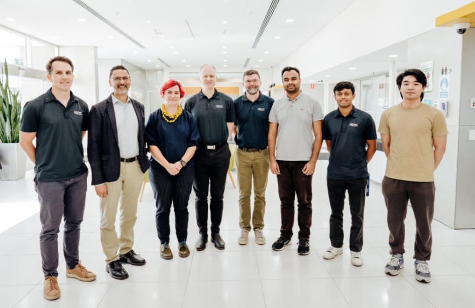
Featured by Defence Trailblazer
Read on Defence Trailblazer
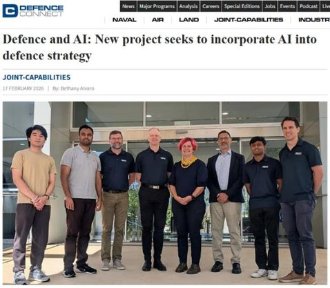
Featured by Defence Connect
Read on Defence Connect
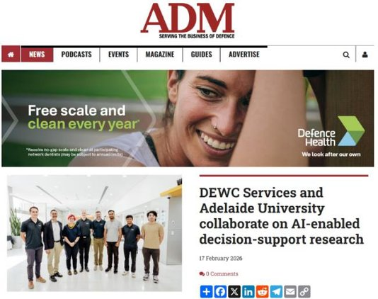
Featured by Australian Defence Magazine
Read on ADM
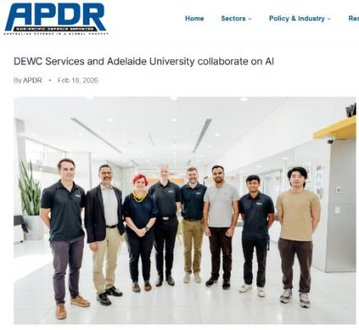
Featured by Asia Pacific Defence Reporter
Read on APDR
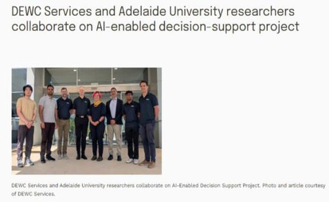
Featured by Australian Industry & Defence Network (AIDN)
Read on AIDN
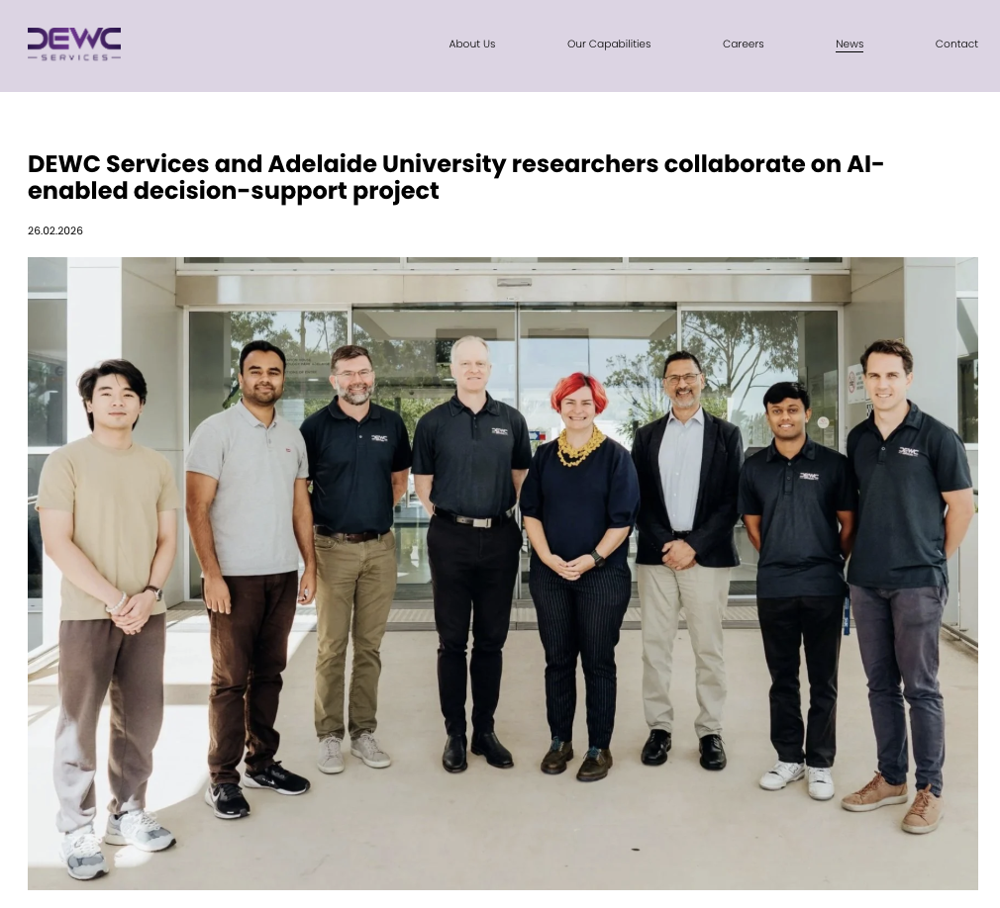
Featured by DEWC Services
Read on DEWC Services
Media Features by University of Adelaide: Celebrating Our Colleagues
Featured in an institutional spotlight across University of Adelaide Staff News and Student News celebrating Dr Hussain Ahmad’s academic journey from Bachelor's student to Cyber Security Engineer, doctoral researcher, and Lecturer, highlighting thesis completion with zero corrections and pedagogical innovation.
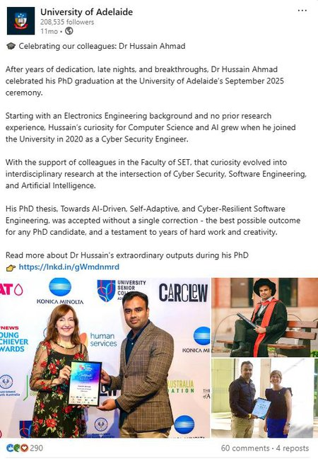
University of Adelaide Staff Feature Spotlight
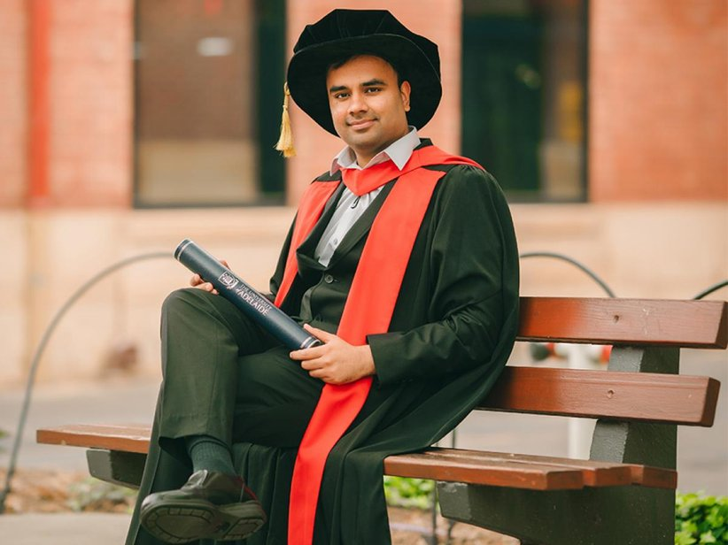
PhD Graduation & Academic Transition
Outstanding International Student Award
Conferred by the University of Adelaide in recognition of research excellence, high-impact industrial R&D collaborations, leadership across student cohorts, and advocacy for equity and inclusion as GEDI Representative.
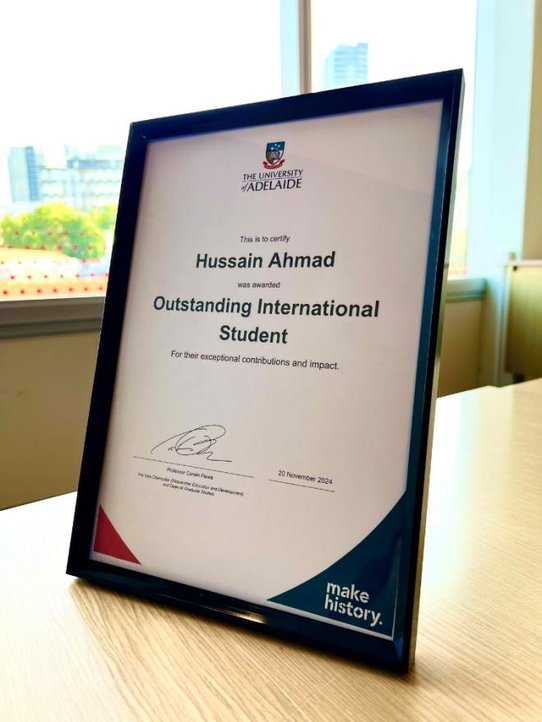
Award presentation ceremony at University of Adelaide
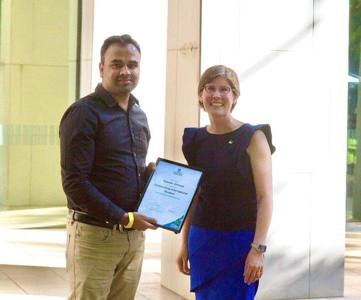
Official Outstanding International Student Award
Media Feature: Outstanding International Student Award Recognition (Minute Mirror)
Publication: Minute Mirror Newspaper (2025). International press coverage highlighting the Outstanding International Student Award conferred by the University of Adelaide for impactful research collaborations and academic leadership.
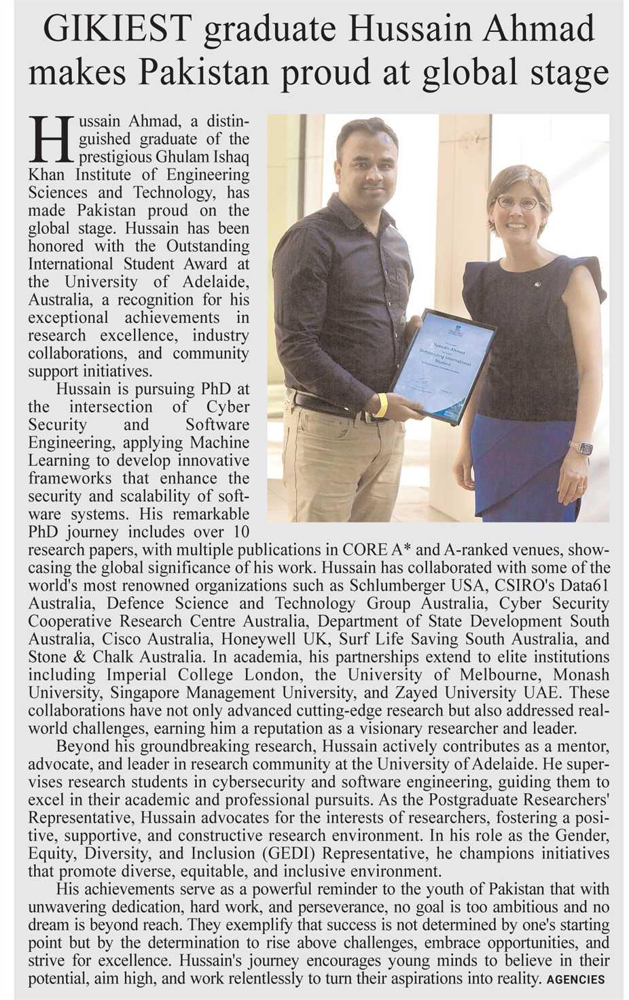
Minute Mirror Newspaper Feature (Page 6)
Media Feature: Outstanding International Student Award Recognition (The News International)
Featured by: The News International (2025). National press spotlight commemorating academic distinction, doctoral achievements, and research leadership at Adelaide University.
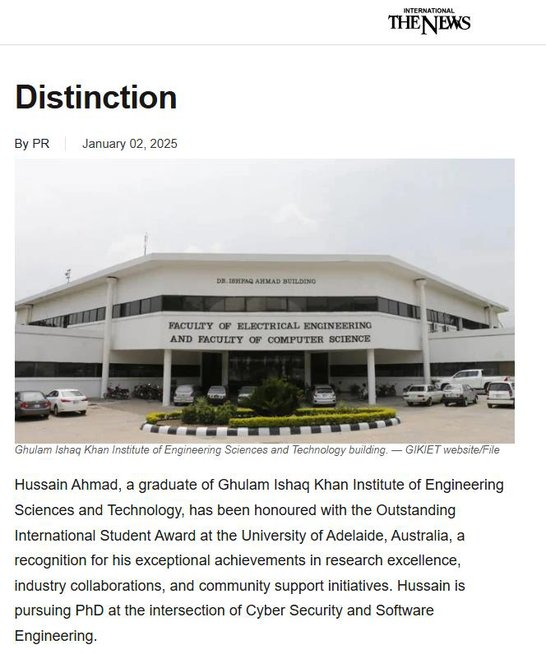
The News International Distinction Article
99% Student Experience of Learning & Teaching Score – University of Adelaide
Achieved an outstanding 99% overall satisfaction rating in the Student Experience of Learning and Teaching (SELT) across courses in Cyber Security, Big Data, and Software Engineering, recognized for structured delivery, industry relevance, and dynamic teaching.
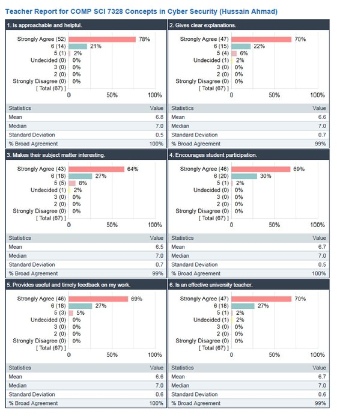
99% SELT Teaching Evaluation Record
People’s Choice Award & Second Place - Visualise Your Thesis Competition
Won both the People’s Choice Award and Second Prize in the 2024 Visualise Your Thesis (VYT) Competition at the University of Adelaide, capturing complex doctoral research in cybersecurity and self-adaptive software through engaging creative visualization.
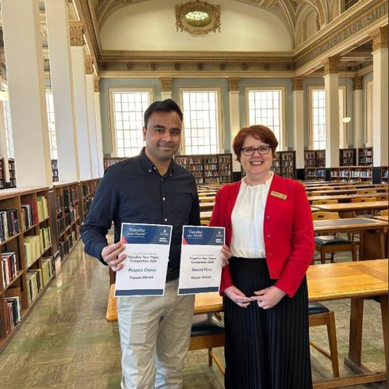
VYT Competition Announcement
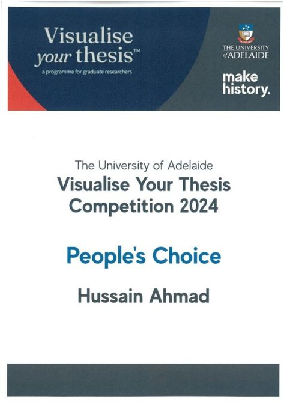
People's Choice Award Certificate
Second Place Winner Certificate
Media Feature: Visualise Your Thesis – PhD Research
Featured by: University of Adelaide Library. Video feature and digital showcase of Dr Hussain Ahmad's award-winning Visualise Your Thesis presentation explaining self-adaptive, cyber-resilient software systems.
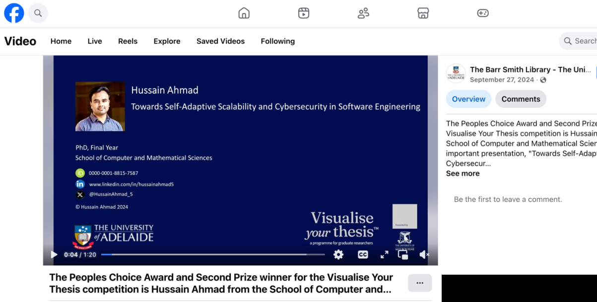
University of Adelaide Library YouTube Showcase
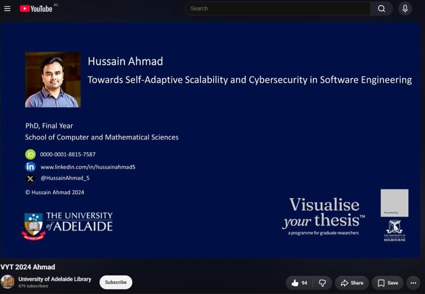
University of Adelaide Facebook Feature
Media Feature: PhD Achievement in Cyber Security
Featured by: Minute Mirror Newspaper (2025). International media coverage highlighting the milestone completion of PhD thesis titled "Towards AI-Driven, Self-Adaptive, and Cyber-Resilient Software Engineering", accepted with zero corrections following international expert evaluation.
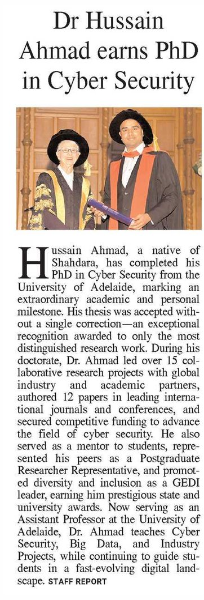
Minute Mirror Feature: PhD in Cybersecurity
Media Feature: Research on Microservices Autoscaling and Kubernetes
Featured by: Journal of Systems and Software (JSS), Elsevier. Research feature spotlighting pioneering work on resilient and adaptive horizontal autoscaling for microservices architectures in Kubernetes cloud environments.
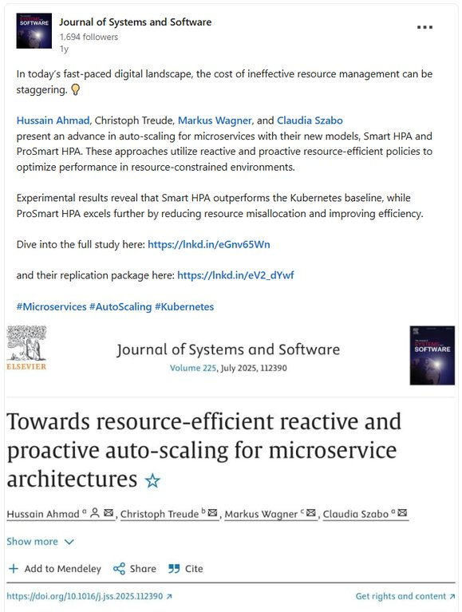
Journal of Systems and Software (JSS) Spotlight
Media Feature: Research on Cyber Situational Awareness
Featured by: Journal of Cybersecurity and Privacy (JCP), MDPI. Official journal media spotlight highlighting research on human factors and cognitive dimensions in cyber situational awareness systems.
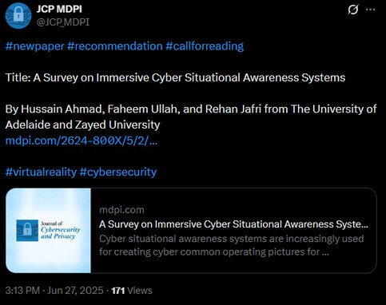
Journal of Cybersecurity and Privacy Feature
International Conference Features
Official conference program and author profile features across top-tier international software engineering and cyber security conferences including IEEE International Conference on Software Architecture (ICSA 2026, 2024) and Asia-Pacific Software Engineering Conference (APSEC 2025).
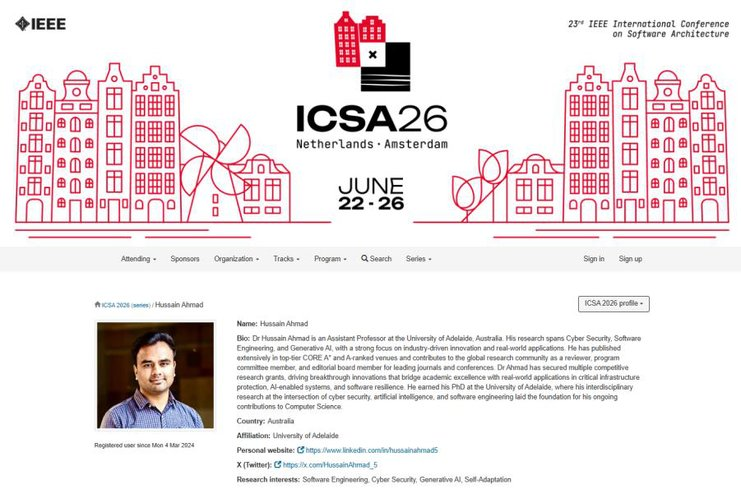
ICSA 2026 Conference Profile
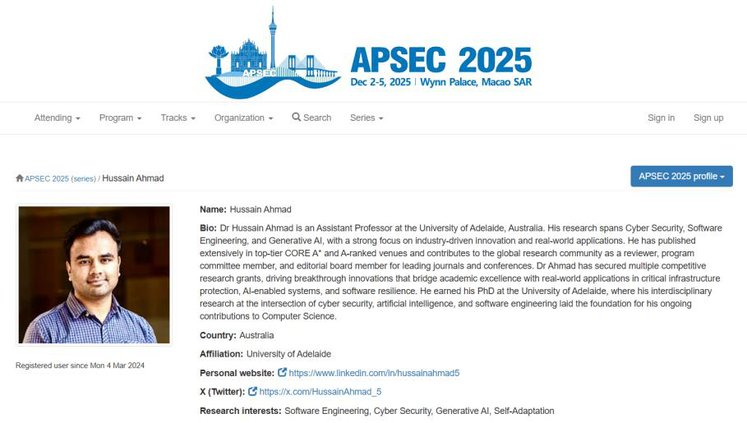
APSEC 2025 Conference Profile
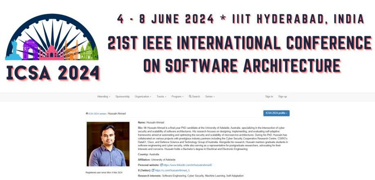
ICSA 2024 Conference Profile
Media Article: Digital Growth vs Cyber Threats: The Critical Need for Cybersecurity
Featured by: Daily Times (2024). Published national newspaper article analyzing the widening threat landscape, urgent cyber resilience imperatives, and strategic frameworks for protecting digital infrastructure.
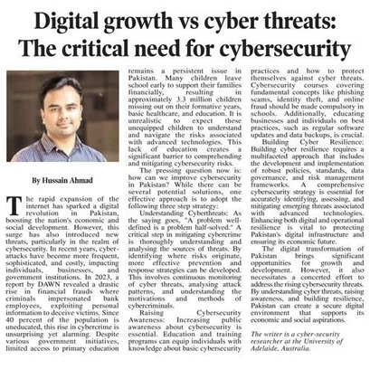
Daily Times Published Article
Media Article: The risks of AI dependence for developing nations
Featured by: The News International (2025). Published national op-ed examining the geopolitical, ethical, and socio-economic risks of reliance on foreign AI systems, advocating for sovereign AI development and technological self-reliance.
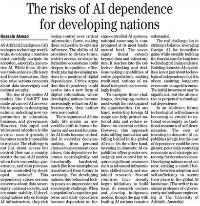
The News International Published Op-Ed
Media Article: Importance of cybersecurity education in Pakistan
Featured by: The News International (2024). Published national op-ed underscoring the vital need for hands-on, modernised cybersecurity education, talent training pipelines, and academic-industry alignment.
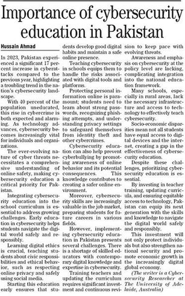
The News International Published Article
Award of Appreciation for Serving as a Judge at the Robotics Competition
Conferred by: National Science and Engineering Fair (2017) in recognition of valuable contribution and service as a technical judge evaluating competitive student robotics and engineering projects.
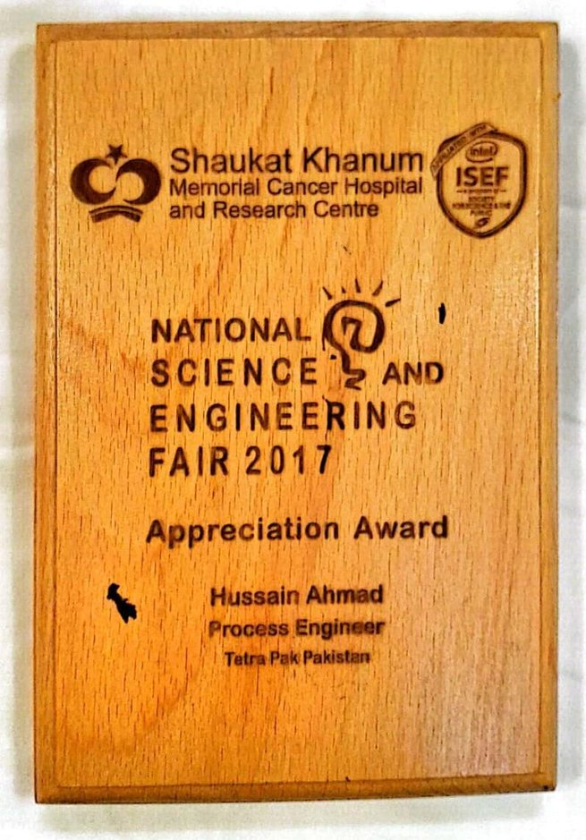
National Science and Engineering Fair Certificate of Appreciation